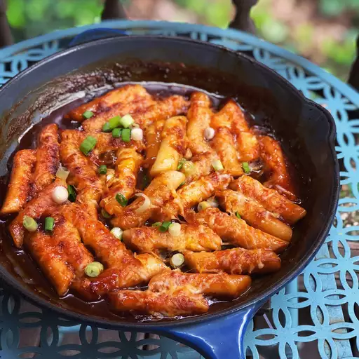

This is how you make tteobokki (Korean Rice Cakes)!

Home
Here the the ingredients you need.
three cups water
two dried anchovies to taste
three tablespoons chile paste
two tablespoons white sugar
one tablespoon soy sauce
two korean fish cakes, sliced
half an onion, thickly sliced
one spring onion, thickly sliced
Here are the steps to make the pasta
- Combine water and achovies in a saucepan and bring a boil. Cook for 10 minutes. Remove and discard anchovies. Set anchovy water aside.
- Combine chile paste, sugar, soy sauce, and corn syrup in a bowl. Set chile paste mixture aside.
- Add rice rackes, onion, and chile paste mixture to anchovy water. Bring to a boil for 5 minutes, stirring occasionally. Add spring onion and boil 3 more minutes.
Now go enjoy your spicy rice cakes!
Reference